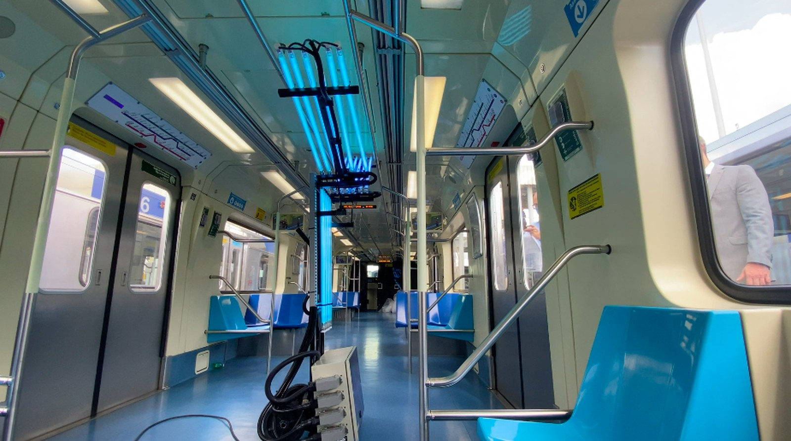

A COVID-19 é uma doença causada pelo coronavírus SARS-CoV-2, que apresenta um quadro clínico que varia de infecções assintomáticas a quadros respiratórios graves. De acordo com a Organização Mundial de Saúde (OMS), a maioria dos pacientes com COVID-19 (cerca de 80%) podem ser assintomáticos e cerca de 20% dos casos podem requerer atendimento hospitalar por apresentarem dificuldade respiratória e desses casos aproximadamente 5% podem necessitar de suporte para o tratamento de insuficiência respiratória (suporte ventilatório).
Os sintomas da COVID-19 podem variar de um simples resfriado até uma pneumonia severa. Sendo os sintomas mais comuns:
A empresa Zasso desenvolveu o robô Hyperviolet C600, que promete desinfectar um vagão em apenas um minuto, dependendo das condições de aplicação. O trabalho também conta com uma parceria com o Instituto de Pesquisas Tecnológicas (IPT), que coletou material dos vagões antes e depois do teste para análise, e vai informar o resultado em uma semana. Caso o procedimento tenha a eficácia comprovada, o método poderá ser implementado em todo o sistema de transporte estadual - trens do próprio Metrô, da CPTM e nos ônibus da EMTU.
 Saiba MaisO vídeo abaixo mostra 3 cenários para acabar a pandemia
Saiba MaisPodcast abaixo fala sobre higiene bucal pode ajudar na prevenção contra Covid-19.
Saiba MaisPodcast abaixo fala sobre a necessidade de testes para combate da pandemia
Saiba MaisGood News Covid-19 Create by Luana Cherri